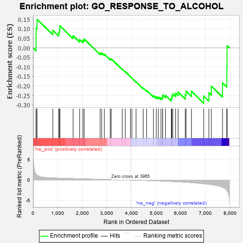
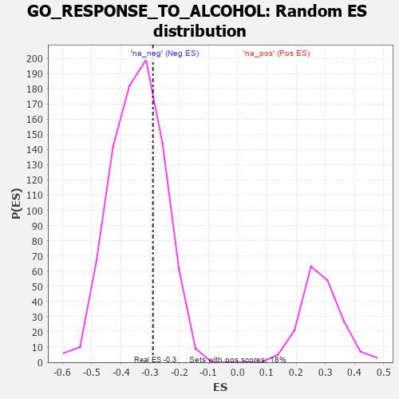

| | | Dataset | 7d |
| Phenotype | NoPhenotypeAvailable |
| Upregulated in class | na_neg |
| GeneSet | GO_RESPONSE_TO_ALCOHOL |
| Enrichment Score (ES) | -0.29017442 |
| Normalized Enrichment Score (NES) | -0.8426359 |
| Nominal p-value | 0.7256098 |
| FDR q-value | 0.9842559 |
| FWER p-Value | 1.0 |
Table: GSEA Results Summary

Fig 1: Enrichment plot: GO_RESPONSE_TO_ALCOHOL
Profile of the Running ES Score & Positions of GeneSet Members on the Rank Ordered List
| PROBE | GENE SYMBOL | GENE_TITLE | RANK IN GENE LIST | RANK METRIC SCORE | RUNNING ES | CORE ENRICHMENT | | 1 | ADCY8 | | | 124 | 1.418 | 0.0444 | No |
| 2 | GLB1 | | | 125 | 1.416 | 0.1044 | No |
| 3 | SPI1 | | | 162 | 1.182 | 0.1500 | No |
| 4 | BLM | | | 804 | 0.531 | 0.0916 | No |
| 5 | AKT1 | | | 1040 | 0.476 | 0.0821 | No |
| 6 | AIFM1 | | | 1072 | 0.469 | 0.0981 | No |
| 7 | RAD51 | | | 1090 | 0.466 | 0.1156 | No |
| 8 | CDK4 | | | 1626 | 0.370 | 0.0638 | No |
| 9 | GLRA2 | | | 1892 | 0.321 | 0.0440 | No |
| 10 | DMAP1 | | | 2025 | 0.301 | 0.0401 | No |
| 11 | KCNC2 | | | 2075 | 0.295 | 0.0464 | No |
| 12 | SLIT2 | | | 2724 | 0.195 | -0.0270 | No |
| 13 | XRN1 | | | 2786 | 0.185 | -0.0269 | No |
| 14 | FGFR2 | | | 2895 | 0.167 | -0.0334 | No |
| 15 | OGG1 | | | 3135 | 0.132 | -0.0580 | No |
| 16 | AHR | | | 3175 | 0.126 | -0.0575 | No |
| 17 | CBL | | | 3621 | 0.056 | -0.1113 | No |
| 18 | HTR1B | | | 3745 | 0.035 | -0.1253 | No |
| 19 | GLRA1 | | | 3957 | 0.001 | -0.1519 | No |
| 20 | PARP1 | | | 4014 | -0.010 | -0.1585 | No |
| 21 | UNC79 | | | 4184 | -0.039 | -0.1782 | No |
| 22 | EPS8 | | | 4474 | -0.088 | -0.2109 | No |
| 23 | GATA3 | | | 4614 | -0.120 | -0.2233 | No |
| 24 | SLIT3 | | | 4890 | -0.175 | -0.2506 | No |
| 25 | KLF4 | | | 5005 | -0.198 | -0.2566 | No |
| 26 | DRD2 | | | 5088 | -0.221 | -0.2576 | No |
| 27 | SMO | | | 5195 | -0.247 | -0.2605 | No |
| 28 | PTEN | | | 5262 | -0.261 | -0.2578 | No |
| 29 | CDK1 | | | 5264 | -0.262 | -0.2468 | No |
| 30 | GRIN1 | | | 5381 | -0.291 | -0.2491 | No |
| 31 | LARP1 | | | 5616 | -0.349 | -0.2638 | Yes |
| 32 | G6PD | | | 5638 | -0.358 | -0.2513 | Yes |
| 33 | CASP8 | | | 5678 | -0.369 | -0.2406 | Yes |
| 34 | PMVK | | | 5792 | -0.403 | -0.2377 | Yes |
| 35 | CDO1 | | | 5892 | -0.432 | -0.2319 | Yes |
| 36 | KLF2 | | | 6182 | -0.532 | -0.2459 | Yes |
| 37 | SMAD2 | | | 6216 | -0.541 | -0.2271 | Yes |
| 38 | ABCA2 | | | 6433 | -0.634 | -0.2275 | Yes |
| 39 | LRP8 | | | 6931 | -0.889 | -0.2525 | Yes |
| 40 | CFTR | | | 7143 | -1.030 | -0.2355 | Yes |
| 41 | ABCA1 | | | 7243 | -1.113 | -0.2008 | Yes |
| 42 | ADCY1 | | | 7695 | -1.752 | -0.1835 | Yes |
| 43 | CALM3 | | | 7869 | -2.525 | -0.0983 | Yes |
| 44 | FYN | | | 7881 | -2.622 | 0.0114 | Yes |
Table: GSEA details [plain text format]

Fig 2: GO_RESPONSE_TO_ALCOHOL: Random ES distribution
Gene set null distribution of ES for GO_RESPONSE_TO_ALCOHOL